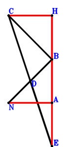
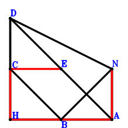
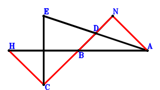
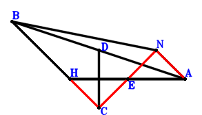
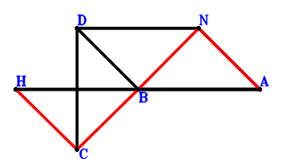
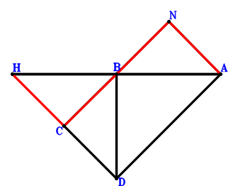
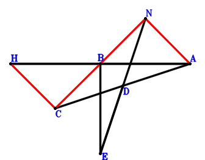
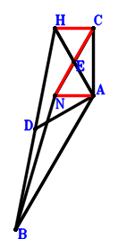

Exercise 3： Let B be the midpoint of HA. D is the midpoint of NB and CE. CB⊥BN. Given that H, A, E are collinear and NA//CH, prove that \(AE·HA=2·CH·NA\).

\(\because \) B is the midpoint of HA \(\therefore \small\overrightarrow{AB}=\dfrac{\small\overrightarrow{AH}}{2}\).\(\because \) D is the midpoint of NB \(\therefore \small\overrightarrow{AD}=\dfrac{\small\overrightarrow{AB}}{2} + \dfrac{\small\overrightarrow{AN}}{2}=\dfrac{\small\overrightarrow{AH}}{4} + \dfrac{\small\overrightarrow{AN}}{2}\).\(\because \) D is the midpoint of CE \(\therefore \small\overrightarrow{AE}=- \small\overrightarrow{AC} + 2 \small\overrightarrow{AD}=- \small\overrightarrow{AC} + \dfrac{\small\overrightarrow{AH}}{2} + \small\overrightarrow{AN}\).\(\because \) CB⊥BN \( \therefore\small\overrightarrow{CB} \cdot \small\overrightarrow{NB}=\left(\small\overrightarrow{AB} - \small\overrightarrow{AC}\right) \cdot \left(\small\overrightarrow{AB} - \small\overrightarrow{AN}\right)=\left(- \small\overrightarrow{AC} + \dfrac{\small\overrightarrow{AH}}{2}\right) \cdot \left(\dfrac{\small\overrightarrow{AH}}{2} - \small\overrightarrow{AN}\right)=- \dfrac{\small\overrightarrow{AC} \cdot \small\overrightarrow{AH}}{2} + \small\overrightarrow{AC} \cdot \small\overrightarrow{AN} + \dfrac{\small\overrightarrow{AH}^{2}}{4} - \dfrac{\small\overrightarrow{AH} \cdot \small\overrightarrow{AN}}{2}=0.\)In conclusion, \(- \small\overrightarrow{EA} \cdot \small\overrightarrow{HA} + 2 \small\overrightarrow{HC} \cdot \small\overrightarrow{NA}=- \small\overrightarrow{AE} \cdot \small\overrightarrow{AH} - 2 \small\overrightarrow{AN} \cdot \left(\small\overrightarrow{AC} - \small\overrightarrow{AH}\right)=- \small\overrightarrow{AH} \cdot \left(- \small\overrightarrow{AC} + \dfrac{\small\overrightarrow{AH}}{2} + \small\overrightarrow{AN}\right) - 2 \small\overrightarrow{AN} \cdot \left(\small\overrightarrow{AC} - \small\overrightarrow{AH}\right)=\small\overrightarrow{AC} \cdot \small\overrightarrow{AH} - 2 \small\overrightarrow{AC} \cdot \small\overrightarrow{AN} - \dfrac{\small\overrightarrow{AH}^{2}}{2} + \small\overrightarrow{AH} \cdot \small\overrightarrow{AN}=0\)\(\because\) H, A, E are collinear and NA//CH \(\therefore\) \(AE·HA=2·CH·NA\).
Exercise 4： Let CNDB be a parallelogram. B is the midpoint of HA. CB⊥BN. Given that H, A, D are collinear and NA//CH, prove that \(AD·HA=2·CH·NA\).
Exercise 5： Let CNDH be a trapezoid with HD//CN and HD=2CN. B is the midpoint of HA. CB⊥BN. Given that H, A, D are collinear and NA//CH, prove that \(AD·HA=4·CH·NA\).
Exercise 7： Let DHAN be a trapezoid with HA//DN and HA=2DN. B is the midpoint of HA. CB⊥BN. Given that HA//CD and NA//CH, prove that \(CD·HA=2·CH·NA\).
Exercise 11： Let D, E, B be the midpoints of BN, CA, HA, respectively. CB⊥BN. Given that HA//ED and NA//CH, prove that \(ED·HA=CH·NA\).
\(\because \) B is the midpoint of HA \(\therefore \small\overrightarrow{AB}=\dfrac{\small\overrightarrow{AH}}{2}\).\(\because \) D is the midpoint of BN \(\therefore \small\overrightarrow{AD}=\dfrac{\small\overrightarrow{AB}}{2} + \dfrac{\small\overrightarrow{AN}}{2}=\dfrac{\small\overrightarrow{AH}}{4} + \dfrac{\small\overrightarrow{AN}}{2}\).\(\because \) E is the midpoint of CA \(\therefore \small\overrightarrow{AE}=\dfrac{\small\overrightarrow{AC}}{2}\).\(\because \) CB⊥BN \( \therefore\small\overrightarrow{CB} \cdot \small\overrightarrow{NB}=\left(\small\overrightarrow{AB} - \small\overrightarrow{AC}\right) \cdot \left(\small\overrightarrow{AB} - \small\overrightarrow{AN}\right)=\left(- \small\overrightarrow{AC} + \dfrac{\small\overrightarrow{AH}}{2}\right) \cdot \left(\dfrac{\small\overrightarrow{AH}}{2} - \small\overrightarrow{AN}\right)=- \dfrac{\small\overrightarrow{AC} \cdot \small\overrightarrow{AH}}{2} + \small\overrightarrow{AC} \cdot \small\overrightarrow{AN} + \dfrac{\small\overrightarrow{AH}^{2}}{4} - \dfrac{\small\overrightarrow{AH} \cdot \small\overrightarrow{AN}}{2}=0.\)In conclusion, \(- \small\overrightarrow{DE} \cdot \small\overrightarrow{HA} + \small\overrightarrow{HC} \cdot \small\overrightarrow{NA}=\small\overrightarrow{AH} \cdot \left(- \small\overrightarrow{AD} + \small\overrightarrow{AE}\right) - \small\overrightarrow{AN} \cdot \left(\small\overrightarrow{AC} - \small\overrightarrow{AH}\right)=\small\overrightarrow{AH} \cdot \left(\dfrac{\small\overrightarrow{AC}}{2} - \dfrac{\small\overrightarrow{AH}}{4} - \dfrac{\small\overrightarrow{AN}}{2}\right) - \small\overrightarrow{AN} \cdot \left(\small\overrightarrow{AC} - \small\overrightarrow{AH}\right)=\dfrac{\small\overrightarrow{AC} \cdot \small\overrightarrow{AH}}{2} - \small\overrightarrow{AC} \cdot \small\overrightarrow{AN} - \dfrac{\small\overrightarrow{AH}^{2}}{4} + \dfrac{\small\overrightarrow{AH} \cdot \small\overrightarrow{AN}}{2}=0\)\(\because\) HA//ED and NA//CH \(\therefore\) \(ED·HA=CH·NA\).
Exercise 13： Let DHAN be a trapezoid with DH//NA and DH=2NA. E, B are the midpoints of DA, HA, respectively. CB⊥BN. Given that HA//CE and NA//CH, prove that \(CE·HA=2·CH·NA\).

\(\because \) B is the midpoint of HA \(\therefore \small\overrightarrow{AB}=\dfrac{\small\overrightarrow{AH}}{2}\).\(\because \) DH//NA and DH=2NA \(\therefore \small\overrightarrow{AD}=\small\overrightarrow{AH} + 2 \small\overrightarrow{AN}\).\(\because \) E is the midpoint of DA \(\therefore \small\overrightarrow{AE}=\dfrac{\small\overrightarrow{AD}}{2}=\dfrac{\small\overrightarrow{AH}}{2} + \small\overrightarrow{AN}\).\(\because \) CB⊥BN \( \therefore\small\overrightarrow{CB} \cdot \small\overrightarrow{NB}=\left(\small\overrightarrow{AB} - \small\overrightarrow{AC}\right) \cdot \left(\small\overrightarrow{AB} - \small\overrightarrow{AN}\right)=\left(- \small\overrightarrow{AC} + \dfrac{\small\overrightarrow{AH}}{2}\right) \cdot \left(\dfrac{\small\overrightarrow{AH}}{2} - \small\overrightarrow{AN}\right)=- \dfrac{\small\overrightarrow{AC} \cdot \small\overrightarrow{AH}}{2} + \small\overrightarrow{AC} \cdot \small\overrightarrow{AN} + \dfrac{\small\overrightarrow{AH}^{2}}{4} - \dfrac{\small\overrightarrow{AH} \cdot \small\overrightarrow{AN}}{2}=0.\)In conclusion, \(- \small\overrightarrow{EC} \cdot \small\overrightarrow{HA} + 2 \small\overrightarrow{HC} \cdot \small\overrightarrow{NA}=\small\overrightarrow{AH} \cdot \left(\small\overrightarrow{AC} - \small\overrightarrow{AE}\right) - 2 \small\overrightarrow{AN} \cdot \left(\small\overrightarrow{AC} - \small\overrightarrow{AH}\right)=\small\overrightarrow{AH} \cdot \left(\small\overrightarrow{AC} - \dfrac{\small\overrightarrow{AH}}{2} - \small\overrightarrow{AN}\right) - 2 \small\overrightarrow{AN} \cdot \left(\small\overrightarrow{AC} - \small\overrightarrow{AH}\right)=\small\overrightarrow{AC} \cdot \small\overrightarrow{AH} - 2 \small\overrightarrow{AC} \cdot \small\overrightarrow{AN} - \dfrac{\small\overrightarrow{AH}^{2}}{2} + \small\overrightarrow{AH} \cdot \small\overrightarrow{AN}=0\)\(\because\) HA//CE and NA//CH \(\therefore\) \(CE·HA=2·CH·NA\).
Exercise 14： Let DBAN be a parallelogram. B is the midpoint of HA. CB⊥BN. Given that HA//CD and NA//CH, prove that \(CD·HA=2·CH·NA\).
Exercise 33： Let NAHB be a trapezoid with AH//NB and AH=2NB. D is the midpoint of AH. AH⊥BC. Given that N, D, C are collinear and AN//CH, prove that \(DC·ND=AN·CH\).
Exercise 35： Let B be the midpoint of HA. D is the midpoint of BN and EA. HA⊥EC. Given that C, B, N are collinear and NA//HC, prove that \(BN·CB=HC·NA\).

\(\because \) B is the midpoint of HA \(\therefore \small\overrightarrow{AB}=\dfrac{\small\overrightarrow{AH}}{2}\).\(\because \) D is the midpoint of BN \(\therefore \small\overrightarrow{AD}=\dfrac{\small\overrightarrow{AB}}{2} + \dfrac{\small\overrightarrow{AN}}{2}=\dfrac{\small\overrightarrow{AH}}{4} + \dfrac{\small\overrightarrow{AN}}{2}\).\(\because \) D is the midpoint of EA \(\therefore \small\overrightarrow{AE}=2 \small\overrightarrow{AD}=\dfrac{\small\overrightarrow{AH}}{2} + \small\overrightarrow{AN}\).\(\because \) HA⊥EC \( \therefore\small\overrightarrow{EC} \cdot \small\overrightarrow{HA}=- \small\overrightarrow{AH} \cdot \left(\small\overrightarrow{AC} - \small\overrightarrow{AE}\right)=- \small\overrightarrow{AH} \cdot \left(\small\overrightarrow{AC} - \dfrac{\small\overrightarrow{AH}}{2} - \small\overrightarrow{AN}\right)=- \small\overrightarrow{AC} \cdot \small\overrightarrow{AH} + \dfrac{\small\overrightarrow{AH}^{2}}{2} + \small\overrightarrow{AH} \cdot \small\overrightarrow{AN}=0.\)In conclusion, \(\small\overrightarrow{CB} \cdot \small\overrightarrow{NB} + \small\overrightarrow{HC} \cdot \small\overrightarrow{NA}=- \small\overrightarrow{AN} \cdot \left(\small\overrightarrow{AC} - \small\overrightarrow{AH}\right) + \left(\small\overrightarrow{AB} - \small\overrightarrow{AC}\right) \cdot \left(\small\overrightarrow{AB} - \small\overrightarrow{AN}\right)=- \small\overrightarrow{AN} \cdot \left(\small\overrightarrow{AC} - \small\overrightarrow{AH}\right) + \left(- \small\overrightarrow{AC} + \dfrac{\small\overrightarrow{AH}}{2}\right) \cdot \left(\dfrac{\small\overrightarrow{AH}}{2} - \small\overrightarrow{AN}\right)=- \dfrac{\small\overrightarrow{AC} \cdot \small\overrightarrow{AH}}{2} + \dfrac{\small\overrightarrow{AH}^{2}}{4} + \dfrac{\small\overrightarrow{AH} \cdot \small\overrightarrow{AN}}{2}=0\)\(\because\) C, B, N are collinear and NA//HC \(\therefore\) \(BN·CB=HC·NA\).
Exercise 38： Let BHAN be a trapezoid with BH//NA and BH=2NA. E, D are the midpoints of HA, BA, respectively. HA⊥DC. Given that C, E, N are collinear and NA//HC, prove that \(CE·EN=HC·NA\).

\(\because \) BH//NA and BH=2NA \(\therefore \small\overrightarrow{AB}=\small\overrightarrow{AH} + 2 \small\overrightarrow{AN}\).\(\because \) D is the midpoint of BA \(\therefore \small\overrightarrow{AD}=\dfrac{\small\overrightarrow{AB}}{2}=\dfrac{\small\overrightarrow{AH}}{2} + \small\overrightarrow{AN}\).\(\because \) E is the midpoint of HA \(\therefore \small\overrightarrow{AE}=\dfrac{\small\overrightarrow{AH}}{2}\).\(\because \) HA⊥DC \( \therefore\small\overrightarrow{DC} \cdot \small\overrightarrow{HA}=- \small\overrightarrow{AH} \cdot \left(\small\overrightarrow{AC} - \small\overrightarrow{AD}\right)=- \small\overrightarrow{AH} \cdot \left(\small\overrightarrow{AC} - \dfrac{\small\overrightarrow{AH}}{2} - \small\overrightarrow{AN}\right)=- \small\overrightarrow{AC} \cdot \small\overrightarrow{AH} + \dfrac{\small\overrightarrow{AH}^{2}}{2} + \small\overrightarrow{AH} \cdot \small\overrightarrow{AN}=0.\)In conclusion, \(\small\overrightarrow{CE} \cdot \small\overrightarrow{NE} + \small\overrightarrow{HC} \cdot \small\overrightarrow{NA}=- \small\overrightarrow{AN} \cdot \left(\small\overrightarrow{AC} - \small\overrightarrow{AH}\right) + \left(- \small\overrightarrow{AC} + \small\overrightarrow{AE}\right) \cdot \left(\small\overrightarrow{AE} - \small\overrightarrow{AN}\right)=- \small\overrightarrow{AN} \cdot \left(\small\overrightarrow{AC} - \small\overrightarrow{AH}\right) + \left(- \small\overrightarrow{AC} + \dfrac{\small\overrightarrow{AH}}{2}\right) \cdot \left(\dfrac{\small\overrightarrow{AH}}{2} - \small\overrightarrow{AN}\right)=- \dfrac{\small\overrightarrow{AC} \cdot \small\overrightarrow{AH}}{2} + \dfrac{\small\overrightarrow{AH}^{2}}{4} + \dfrac{\small\overrightarrow{AH} \cdot \small\overrightarrow{AN}}{2}=0\)\(\because\) C, E, N are collinear and NA//HC \(\therefore\) \(CE·EN=HC·NA\).
Exercise 39： Let DBAN be a parallelogram. B is the midpoint of HA. HA⊥DC. Given that C, B, N are collinear and NA//HC, prove that \(BN·CB=HC·NA\).

\(\because \) B is the midpoint of HA \(\therefore \small\overrightarrow{AB}=\dfrac{\small\overrightarrow{AH}}{2}\).\(\because \) DBAN is a parallelogram \(\therefore \small\overrightarrow{AD}=\dfrac{\small\overrightarrow{AH}}{2} + \small\overrightarrow{AN}\).\(\because \) HA⊥DC \( \therefore\small\overrightarrow{DC} \cdot \small\overrightarrow{HA}=- \small\overrightarrow{AH} \cdot \left(\small\overrightarrow{AC} - \small\overrightarrow{AD}\right)=- \small\overrightarrow{AH} \cdot \left(\small\overrightarrow{AC} - \dfrac{\small\overrightarrow{AH}}{2} - \small\overrightarrow{AN}\right)=- \small\overrightarrow{AC} \cdot \small\overrightarrow{AH} + \dfrac{\small\overrightarrow{AH}^{2}}{2} + \small\overrightarrow{AH} \cdot \small\overrightarrow{AN}=0.\)In conclusion, \(\small\overrightarrow{CB} \cdot \small\overrightarrow{NB} + \small\overrightarrow{HC} \cdot \small\overrightarrow{NA}=- \small\overrightarrow{AN} \cdot \left(\small\overrightarrow{AC} - \small\overrightarrow{AH}\right) + \left(\small\overrightarrow{AB} - \small\overrightarrow{AC}\right) \cdot \left(\small\overrightarrow{AB} - \small\overrightarrow{AN}\right)=- \small\overrightarrow{AN} \cdot \left(\small\overrightarrow{AC} - \small\overrightarrow{AH}\right) + \left(- \small\overrightarrow{AC} + \dfrac{\small\overrightarrow{AH}}{2}\right) \cdot \left(\dfrac{\small\overrightarrow{AH}}{2} - \small\overrightarrow{AN}\right)=- \dfrac{\small\overrightarrow{AC} \cdot \small\overrightarrow{AH}}{2} + \dfrac{\small\overrightarrow{AH}^{2}}{4} + \dfrac{\small\overrightarrow{AH} \cdot \small\overrightarrow{AN}}{2}=0\)\(\because\) C, B, N are collinear and NA//HC \(\therefore\) \(BN·CB=HC·NA\).
Exercise 41： Let NCDA be a parallelogram. B is the midpoint of HA. BD⊥HA. Given that C, B, N are collinear and NA//HC, prove that \(BN·CB=HC·NA\).

\(\because \) B is the midpoint of HA \(\therefore \small\overrightarrow{AB}=\dfrac{\small\overrightarrow{AH}}{2}\).\(\because \) NCDA is a parallelogram \(\therefore \small\overrightarrow{AD}=\small\overrightarrow{AC} - \small\overrightarrow{AN}\).\(\because \) BD⊥HA \( \therefore\small\overrightarrow{BD} \cdot \small\overrightarrow{HA}=- \small\overrightarrow{AH} \cdot \left(- \small\overrightarrow{AB} + \small\overrightarrow{AD}\right)=- \small\overrightarrow{AH} \cdot \left(\small\overrightarrow{AC} - \dfrac{\small\overrightarrow{AH}}{2} - \small\overrightarrow{AN}\right)=- \small\overrightarrow{AC} \cdot \small\overrightarrow{AH} + \dfrac{\small\overrightarrow{AH}^{2}}{2} + \small\overrightarrow{AH} \cdot \small\overrightarrow{AN}=0.\)In conclusion, \(\small\overrightarrow{CB} \cdot \small\overrightarrow{NB} + \small\overrightarrow{HC} \cdot \small\overrightarrow{NA}=- \small\overrightarrow{AN} \cdot \left(\small\overrightarrow{AC} - \small\overrightarrow{AH}\right) + \left(\small\overrightarrow{AB} - \small\overrightarrow{AC}\right) \cdot \left(\small\overrightarrow{AB} - \small\overrightarrow{AN}\right)=- \small\overrightarrow{AN} \cdot \left(\small\overrightarrow{AC} - \small\overrightarrow{AH}\right) + \left(- \small\overrightarrow{AC} + \dfrac{\small\overrightarrow{AH}}{2}\right) \cdot \left(\dfrac{\small\overrightarrow{AH}}{2} - \small\overrightarrow{AN}\right)=- \dfrac{\small\overrightarrow{AC} \cdot \small\overrightarrow{AH}}{2} + \dfrac{\small\overrightarrow{AH}^{2}}{4} + \dfrac{\small\overrightarrow{AH} \cdot \small\overrightarrow{AN}}{2}=0\)\(\because\) C, B, N are collinear and NA//HC \(\therefore\) \(BN·CB=HC·NA\).
Exercise 42： Let B be the midpoint of HA. D is the midpoint of EN and CA. BE⊥HA. Given that C, B, N are collinear and NA//HC, prove that \(BN·CB=HC·NA\).

\(\because \) B is the midpoint of HA \(\therefore \small\overrightarrow{AB}=\dfrac{\small\overrightarrow{AH}}{2}\).\(\because \) D is the midpoint of CA \(\therefore \small\overrightarrow{AD}=\dfrac{\small\overrightarrow{AC}}{2}\).\(\because \) D is the midpoint of EN \(\therefore \small\overrightarrow{AE}=2 \small\overrightarrow{AD} - \small\overrightarrow{AN}=\small\overrightarrow{AC} - \small\overrightarrow{AN}\).\(\because \) BE⊥HA \( \therefore\small\overrightarrow{BE} \cdot \small\overrightarrow{HA}=- \small\overrightarrow{AH} \cdot \left(- \small\overrightarrow{AB} + \small\overrightarrow{AE}\right)=- \small\overrightarrow{AH} \cdot \left(\small\overrightarrow{AC} - \dfrac{\small\overrightarrow{AH}}{2} - \small\overrightarrow{AN}\right)=- \small\overrightarrow{AC} \cdot \small\overrightarrow{AH} + \dfrac{\small\overrightarrow{AH}^{2}}{2} + \small\overrightarrow{AH} \cdot \small\overrightarrow{AN}=0.\)In conclusion, \(\small\overrightarrow{CB} \cdot \small\overrightarrow{NB} + \small\overrightarrow{HC} \cdot \small\overrightarrow{NA}=- \small\overrightarrow{AN} \cdot \left(\small\overrightarrow{AC} - \small\overrightarrow{AH}\right) + \left(\small\overrightarrow{AB} - \small\overrightarrow{AC}\right) \cdot \left(\small\overrightarrow{AB} - \small\overrightarrow{AN}\right)=- \small\overrightarrow{AN} \cdot \left(\small\overrightarrow{AC} - \small\overrightarrow{AH}\right) + \left(- \small\overrightarrow{AC} + \dfrac{\small\overrightarrow{AH}}{2}\right) \cdot \left(\dfrac{\small\overrightarrow{AH}}{2} - \small\overrightarrow{AN}\right)=- \dfrac{\small\overrightarrow{AC} \cdot \small\overrightarrow{AH}}{2} + \dfrac{\small\overrightarrow{AH}^{2}}{4} + \dfrac{\small\overrightarrow{AH} \cdot \small\overrightarrow{AN}}{2}=0\)\(\because\) C, B, N are collinear and NA//HC \(\therefore\) \(BN·CB=HC·NA\).
Exercise 43： Let CNBA be a trapezoid with BA//NC and BA=2NC. D, E are the midpoints of BH, HA, respectively. DA⊥AH. Given that N, E, C are collinear and NA//HC, prove that \(EC·NE=HC·NA\).

\(\because \) BA//NC and BA=2NC \(\therefore \small\overrightarrow{AB}=- 2 \small\overrightarrow{AC} + 2 \small\overrightarrow{AN}\).\(\because \) D is the midpoint of BH \(\therefore \small\overrightarrow{AD}=\dfrac{\small\overrightarrow{AB}}{2} + \dfrac{\small\overrightarrow{AH}}{2}=- \small\overrightarrow{AC} + \dfrac{\small\overrightarrow{AH}}{2} + \small\overrightarrow{AN}\).\(\because \) E is the midpoint of HA \(\therefore \small\overrightarrow{AE}=\dfrac{\small\overrightarrow{AH}}{2}\).\(\because \) DA⊥AH \( \therefore\small\overrightarrow{AD} \cdot \small\overrightarrow{AH}=\small\overrightarrow{AH} \cdot \left(- \small\overrightarrow{AC} + \dfrac{\small\overrightarrow{AH}}{2} + \small\overrightarrow{AN}\right)=- \small\overrightarrow{AC} \cdot \small\overrightarrow{AH} + \dfrac{\small\overrightarrow{AH}^{2}}{2} + \small\overrightarrow{AH} \cdot \small\overrightarrow{AN}=0.\)In conclusion, \(\small\overrightarrow{CE} \cdot \small\overrightarrow{NE} + \small\overrightarrow{HC} \cdot \small\overrightarrow{NA}=- \small\overrightarrow{AN} \cdot \left(\small\overrightarrow{AC} - \small\overrightarrow{AH}\right) + \left(- \small\overrightarrow{AC} + \small\overrightarrow{AE}\right) \cdot \left(\small\overrightarrow{AE} - \small\overrightarrow{AN}\right)=- \small\overrightarrow{AN} \cdot \left(\small\overrightarrow{AC} - \small\overrightarrow{AH}\right) + \left(- \small\overrightarrow{AC} + \dfrac{\small\overrightarrow{AH}}{2}\right) \cdot \left(\dfrac{\small\overrightarrow{AH}}{2} - \small\overrightarrow{AN}\right)=- \dfrac{\small\overrightarrow{AC} \cdot \small\overrightarrow{AH}}{2} + \dfrac{\small\overrightarrow{AH}^{2}}{4} + \dfrac{\small\overrightarrow{AH} \cdot \small\overrightarrow{AN}}{2}=0\)\(\because\) N, E, C are collinear and NA//HC \(\therefore\) \(EC·NE=HC·NA\).
Exercise 48： Let ABCN be a trapezoid with AB//NC and AB=2NC. D is the midpoint of AH. AH⊥HB. Given that N, D, C are collinear and AN//CH, prove that \(DC·ND=AN·CH\).